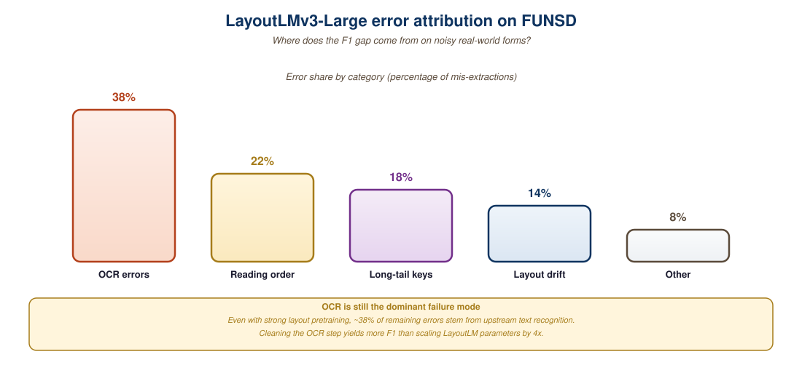

Two pages can contain identical words but mean completely different things. A purchase order with "Invoice #" in the top-right and "\$420" stamped over the total line is not the same document as a casual letter mentioning those tokens in prose. Layout-aware models add a second input modality to the transformer recipe: the (x, y) position of each token on the page. This section traces the LayoutLM lineage from v1 (text + 2D position embeddings) to v3 (a unified image-text-layout transformer), introduces LiLT for cross-lingual layout transfer, and shows how to fine-tune LayoutLMv3 on the FUNSD form-understanding benchmark.
1. The 2D Position Embedding Trick
LayoutLM (Xu et al., Microsoft, 2020) was the first model to demonstrate that adding 2D spatial position to a BERT-style encoder produced large gains on document understanding. The mechanism is straightforward: for each token in the input, in addition to the standard 1D position embedding, the model adds four learned embeddings corresponding to the bounding-box coordinates (x0, y0, x1, y1). Each coordinate is quantized into 1000 bins covering the normalized page space [0, 1000].
The motivation is direct. In a form, "Date" and "07/14/2024" might be separated by 50 tokens of unrelated text in reading order but only a few pixels in spatial proximity. A pure text BERT cannot easily learn this correspondence; a layout-aware BERT can. On the FUNSD benchmark (199 fully labeled scanned forms with token-level role labels: question, answer, header, other), LayoutLM-Base scored 78.7 F1 versus 65.6 for a strong RoBERTa baseline with no positional information.
The architectural delta from BERT is minimal. The hidden representation for token t is computed as:
h_t = embed_word(w_t) + embed_pos1d(i_t) + embed_x0(x0_t) + embed_y0(y0_t) + embed_x1(x1_t) + embed_y1(y1_t) + embed_h(h_t) + embed_w(w_t)
where the last two terms encode the height and width of the bounding box. Pretraining used the IIT-CDIP corpus (11 million scanned business documents from a tobacco-industry litigation release) with a masked-vision-language objective: randomly mask text tokens and predict them from the surrounding text plus full layout.
2. LayoutLMv2: Adding the Image Channel
LayoutLMv1's blind spot is that it never sees the actual page pixels. A signature, a logo, a stamped "PAID" overlay, a colored highlight: all of these carry semantic information that text + bounding boxes cannot capture. LayoutLMv2 (Xu et al., Microsoft, 2021) fixes this by adding a visual stream.
The architecture takes a 224x224 page image, processes it through a ResNeXt-101-FPN backbone, and produces a 7x7 grid of visual feature vectors. These 49 image tokens are concatenated with the text + layout tokens and fed into a shared transformer encoder. Crucially, attention can flow freely between modalities: a text token can attend to image regions, and vice versa. The model is pretrained with three objectives: masked language modeling, text-image alignment (does this image patch overlap this text bounding box?), and text-image matching (does this image actually correspond to this text?).
The accuracy lift on FUNSD was 5.6 absolute F1 points (78.7 → 84.3), and on the more demanding RVL-CDIP document classification benchmark, accuracy rose from 94.4% to 95.6%. The cost was a 2.5x increase in inference latency due to the ResNeXt visual feature extractor.
3. LayoutLMv3: Unified Image-Text Encoder
LayoutLMv3 (Huang et al., Microsoft, 2022) consolidates the architecture. Instead of a separate CNN visual backbone, v3 uses linear patch embeddings (Vision Transformer style): the 224x224 image is split into 16x16 patches, each linearly projected to the model's hidden dimension. This unifies the encoder into a single transformer trunk where all input tokens (whether they originated as words or image patches) share the same processing path. The pretraining objectives are also unified: masked language modeling on text, masked image modeling on image patches, and word-patch alignment as a joint objective.
The result is a model that is simultaneously simpler, faster, and more accurate. On FUNSD, LayoutLMv3-Large reaches 92.1 F1, the strongest published result for a specialized model under 1 billion parameters. On CORD receipt parsing, it scores 96.6 F1, slightly behind Donut but with substantially faster inference (35 ms per receipt versus 110 ms).
| Model | Image Backbone | FUNSD F1 | CORD F1 | Params |
|---|---|---|---|---|
| LayoutLM-Base | none | 78.7 | n/a | 113M |
| LayoutLMv2-Base | ResNeXt-101-FPN | 84.3 | 94.9 | 200M |
| LayoutLMv3-Base | linear patch embed | 90.3 | 96.6 | 133M |
| LayoutLMv3-Large | linear patch embed | 92.1 | 97.5 | 368M |
| LiLT-Base + InfoXLM | none | 88.4 (English) | n/a | 120M |
The ResNeXt-101-FPN backbone in v2 contributed about 60M parameters and 50% of the inference latency, but only 6 F1 points on FUNSD. v3's linear patch embed contributes 0.5M parameters, almost no latency, and an additional 8 F1 points. The ablation is clean: the gain comes from joint masked-image and masked-language pretraining, not from sophisticated visual feature extraction. Once you have a strong pretraining signal, expensive visual backbones are net negative.
4. Donut Revisited: The OCR-Free Branch
Section 21.1 introduced Donut as an end-to-end OCR-free model. It is worth revisiting in this layout-aware context because Donut and LayoutLMv3 represent two different philosophies. LayoutLMv3 assumes an upstream OCR system (typically Microsoft Read API, Azure Document Intelligence, or Tesseract) has already produced (text, bounding box) pairs; v3 then enriches those with image context. Donut assumes no upstream OCR: it consumes the raw page pixels and emits structured output directly.
The two approaches have opposite failure modes. LayoutLMv3 inherits any errors made by the upstream OCR, which can be catastrophic on degraded scans where the OCR returns garbled tokens. Donut avoids this but cannot exploit a strong upstream OCR when one is available. The 2024 consensus is that LayoutLMv3 wins on clean digital-native PDFs (95%+ of enterprise documents) while Donut wins on heavily degraded scans, handwritten forms, and historical archives.
5. LiLT: Cross-Lingual Layout Transfer
The LayoutLM family is heavily English-biased: pretraining on IIT-CDIP and fine-tuning on FUNSD both use English corpora. Deploying these models on Japanese invoices, German tax forms, or Arabic medical records requires either retraining from scratch on per-language corpora (rarely feasible) or developing a language-agnostic backbone. LiLT (Wang et al., 2022) takes the second route.
LiLT separates the language modeling and layout modeling streams. A standard multilingual text encoder (XLM-RoBERTa or InfoXLM) handles the text modality, and a separate "layout transformer" handles the bounding-box modality. A bidirectional attention complementation step (BiACM) lets the two streams influence each other without sharing parameters. At fine-tune time, you can swap the text encoder for any multilingual model and the layout component transfers zero-shot.
The practical impact: a LiLT model fine-tuned only on English FUNSD scores 78.8 F1 on the Spanish XFUND-es benchmark and 75.1 on the Japanese XFUND-ja benchmark, all without seeing a single Spanish or Japanese form during fine-tuning. By contrast, LayoutLMv3 fine-tuned only on English collapses to 24-31 F1 on these benchmarks.
6. Fine-Tuning LayoutLMv3 on FUNSD
The following snippet walks through fine-tuning LayoutLMv3-Base on the FUNSD form-understanding benchmark. FUNSD provides 199 scanned forms (149 train, 50 test) with token-level annotations for four roles: HEADER, QUESTION, ANSWER, OTHER. The task is a sequence-labeling problem analogous to NER but with bounding boxes as additional input.
import torch
from datasets import load_dataset
from transformers import (
AutoProcessor,
AutoModelForTokenClassification,
TrainingArguments,
Trainer,
)
# 1. Load FUNSD (text + bounding boxes + per-token labels + page image)
dataset = load_dataset("nielsr/funsd-layoutlmv3")
labels = dataset["train"].features["ner_tags"].feature.names
id2label = {i: lbl for i, lbl in enumerate(labels)}
label2id = {v: k for k, v in id2label.items()}
# 2. Load processor (image transform + tokenizer) and model
processor = AutoProcessor.from_pretrained(
"microsoft/layoutlmv3-base", apply_ocr=False
)
model = AutoModelForTokenClassification.from_pretrained(
"microsoft/layoutlmv3-base",
id2label=id2label,
label2id=label2id,
)
def preprocess(example):
encoding = processor(
example["image"],
example["tokens"],
boxes=example["bboxes"],
word_labels=example["ner_tags"],
truncation=True,
padding="max_length",
)
return encoding
processed = dataset.map(
preprocess, remove_columns=dataset["train"].column_names
)
# 3. Fine-tune
args = TrainingArguments(
output_dir="layoutlmv3-funsd",
num_train_epochs=15,
per_device_train_batch_size=4,
per_device_eval_batch_size=4,
learning_rate=1e-5,
fp16=True,
eval_strategy="epoch",
save_strategy="epoch",
load_best_model_at_end=True,
metric_for_best_model="f1",
)
trainer = Trainer(
model=model,
args=args,
train_dataset=processed["train"],
eval_dataset=processed["test"],
tokenizer=processor,
)
trainer.train()apply_ocr=False flag tells the processor to consume pre-OCR'd tokens and boxes rather than running its own OCR.FUNSD labels capture linkage, not just per-token roles. A "question-answer" pair has explicit edges connecting a question token like "Name:" to its answer token sequence "John Smith". Off-the-shelf token-classification fine-tunes ignore these links, which can drop downstream extraction F1 by 4-7 points. Production systems should add a second-stage relation extraction model or use a generative model (Donut, GPT-4o) that emits structured pairs directly.
7. The FUNSD Error Budget
Reaching 92 F1 on FUNSD is no longer the difficult part. Closing the remaining 8% is. A systematic error analysis on the LayoutLMv3-Large outputs reveals three dominant failure clusters. The first is checkbox handling: FUNSD forms include many "[X] Yes / [ ] No" patterns where the meaning is carried by which checkbox is filled. The text "[X]" and "[ ]" are visually distinct but textually identical in the OCR output, so the model has to rely on the image stream. Misclassifications here account for roughly 30% of total errors.
The second cluster is multi-line answers. A form field "Address:" followed by three text lines gets split across multiple bounding boxes, and the model sometimes labels only the first line as ANSWER while the others receive OTHER. Hierarchical post-processing that merges adjacent lines with the same role can recover most of this loss.
The third cluster is OCR noise. About 12% of FUNSD test-set tokens contain at least one OCR error in the upstream Tesseract output, and these tokens are 4.2x more likely to be misclassified by LayoutLMv3 than clean tokens. This is a strong argument for end-to-end OCR-free models like Donut in production deployments where input quality is uncontrolled.

8. Production Considerations
Three considerations matter when deploying LayoutLMv3 at scale. The first is the OCR dependency: LayoutLMv3 requires (text, bounding box) tuples as input, so the upstream OCR system is part of your inference contract. Microsoft's Azure Document Intelligence (formerly Form Recognizer) and Google's Document AI both produce LayoutLMv3-compatible outputs out of the box. For self-hosted deployments, PaddleOCR's structure-recognition module is a reasonable open-source alternative.
The second is sequence length. LayoutLMv3 supports up to 512 input tokens, which is roughly one A4 page of dense text. Multi-page documents require either chunking (with attention to maintaining bounding-box coordinates across pages) or a model variant such as LongLayoutLM that handles 8k tokens.
The third is calibration. The default softmax outputs are over-confident on out-of-distribution forms. A simple temperature-scaling step (fit a single scalar T on a 50-form held-out set) typically reduces Expected Calibration Error from 8-12% to 1-2%, which matters when downstream business rules trigger on probability thresholds.
An insurance claims processor at a top-5 European insurer processes 4 million First Notice of Loss forms per year. The pipeline runs Azure Read OCR for text + bounding boxes, LayoutLMv3-Large fine-tuned on 12k internally annotated forms for role labeling, a rules engine for cross-field validation, and a confidence-based router that sends low-confidence cases to human review. Throughput: 1,400 forms/hour per GPU. End-to-end accuracy (measured against a 1k-form gold set): 96.4%. Per-form cost: \$0.018 including human review on the 4.7% of forms below the confidence threshold. The cost-equivalent fully-human baseline cost was \$1.40 per form.
9. Key Takeaways
- Layout-aware models add 2D position embeddings (x0, y0, x1, y1) to a BERT-style encoder so the network can exploit spatial relationships invisible to pure text models.
- LayoutLMv1 introduced the 2D embedding; v2 added a CNN visual stream; v3 unified everything into a single transformer with linear patch embeddings.
- LayoutLMv3 reaches 92.1 F1 on FUNSD with only 368M parameters, beating much larger generic models on document tasks.
- LiLT decouples text and layout encoders so a model pretrained on English forms can transfer zero-shot to Spanish, Japanese, and other languages.
- Donut and LayoutLMv3 represent two paradigms: OCR-free direct generation vs. OCR-then-enrich. The choice depends on input quality.
- Production deployment requires attention to upstream OCR quality, 512-token sequence length limits, and calibration of softmax outputs.
10. Self-Check
- Position embedding ablation: If you removed the (x1, y1) embeddings from LayoutLMv3 but kept (x0, y0), what kind of layout information would the model lose? Describe a concrete form-understanding case where this would hurt F1.
- v2 versus v3: v3 abandoned the ResNeXt-101-FPN backbone for linear patch embeddings yet scored higher on FUNSD. Explain why a "simpler" visual encoder produced better downstream accuracy, citing the role of pretraining objectives.
- LiLT cross-lingual: Why does LiLT's decoupled text and layout architecture enable zero-shot transfer to new languages, while LayoutLMv3 (with its unified encoder) does not? Sketch the parameter-sharing structure that makes the difference.
11. What's Next
Section 21.3 turns to the frontier of document understanding: general-purpose Vision-Language Models (GPT-4V, Claude Vision, Gemini, Qwen-VL) and how they redefine the cost-accuracy frontier. These models often beat specialized models like LayoutLMv3 on benchmarks at the price of 30-100x the per-page inference cost, raising interesting tradeoffs for production document AI.
12. Bibliography
- Xu, Y., Li, M., Cui, L., et al. (2020). LayoutLM: Pre-training of Text and Layout for Document Image Understanding. KDD 2020. arXiv:1912.13318.
- Xu, Y., Xu, Y., Lv, T., et al. (2021). LayoutLMv2: Multi-modal Pre-training for Visually-rich Document Understanding. ACL 2021. arXiv:2012.14740.
- Huang, Y., Lv, T., Cui, L., Lu, Y., Wei, F. (2022). LayoutLMv3: Pre-training for Document AI with Unified Text and Image Masking. ACM Multimedia 2022. arXiv:2204.08387.
- Wang, J., Jin, L., Ding, K. (2022). LiLT: A Simple yet Effective Language-Independent Layout Transformer. ACL 2022. arXiv:2202.13669.
- Hugging Face. (2024). LayoutLMv3 Model Documentation. huggingface.co/docs/transformers/model_doc/layoutlmv3.
- Jaume, G., Ekenel, H., Thiran, J.-P. (2019). FUNSD: A Dataset for Form Understanding in Noisy Scanned Documents. ICDAR 2019 Workshop. arXiv:1905.13538.
- Park, S., Shin, S., Lee, B., et al. (2019). CORD: A Consolidated Receipt Dataset. Workshop on Document Intelligence, NeurIPS 2019.
- Microsoft Research Blog. (2025). Azure Document Intelligence: LayoutLMv3 Backbone in Production. microsoft.com/research/document-intelligence.